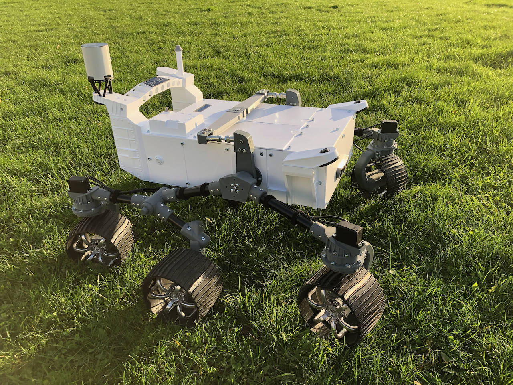
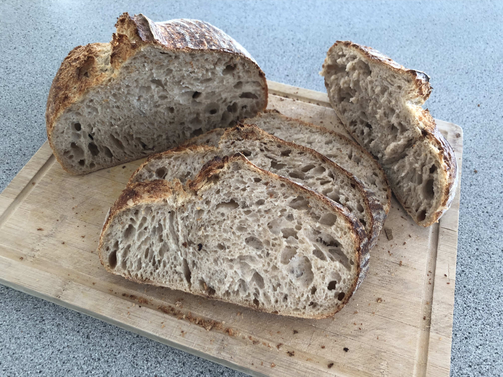

PROJECTS
CRAFTED BY HAND, GUIDED BY CURIOSITY

Rover
Autonomous robotics project with custom electronics and programming

Sourdough
Artisanal bread making experiments
Lamps
Custom lighting designs and fabrication
Kids Lamps
Fun and creative lighting projects for children's spaces